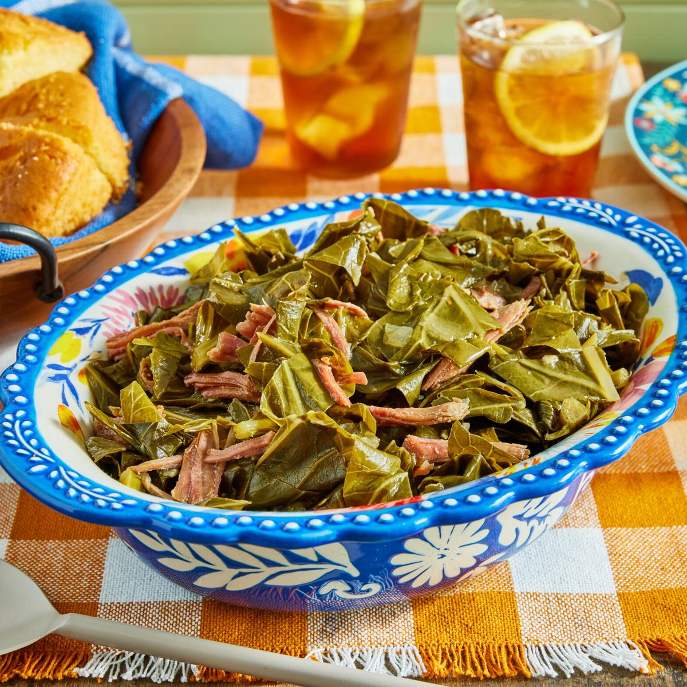

Collard Greens

Description
On the hunt for hearty vegetable side dishes that aren’t bland? Scoop up some tangy, meaty, scrumptious collard greens. A staple in the southern region of the United States, these greens are enjoyed year-round but especially for a New Year's Day dinner. A feast of black-eyed peas (coins), cornbread (gold), and brothy collard greens (money) are eaten to symbolize luck, health, and wealth in the new year!
Ingredients
- 1 lb. smoked turkey legs (about 2)
- 1 tbsp, olive oil
- 4 garlic cloves, finely chopped
- 2 tsp, kosher salt, plus more to taste
- 1 tsp, paprika
- 1/2 tsp, ground black pepper
- 1/2 tsp, crushed red pepper flakes
- 1 (2-lb.) bag chopped fresh collard greens
- 1 qt, chicken broth
- 3 tbsp, apple cider vinegar, plus more to taste
- 1 tbsp, granulated sugar
- Hot pepper sauce, to serve
Steps
- In a large pot, cover the turkey legs in 2 quarts of water. Bring the turkey legs to a boil over medium-high heat. Reduce the heat to medium-low and simmer, uncovered, until the turkey is tender and falling off the bone, about 1 ½ hours.
- Remove the turkey legs from the stock and strain the stock into a large bowl through a fine mesh sieve. When the turkey is cool enough to handle, remove the bones and skin and shred the meat into bite-sized pieces.
- In the same large pot, heat the olive oil over medium heat. Add the onion, garlic, salt, paprika, black pepper, and red pepper flakes. Cook, stirring frequently, until lightly golden, 3 to 4 minutes. Add the greens and strained smoked turkey stock. Stir in the chicken broth, vinegar, sugar, and shredded turkey. Add water until it just covers the greens. Cover and cook until the greens are tender, 45 minutes to 1 hour. Remove the lid and simmer until the liquid is slightly reduced, 10 minutes. Taste for salt and vinegar.
- Serve hot, with pepper sauce, if you like.